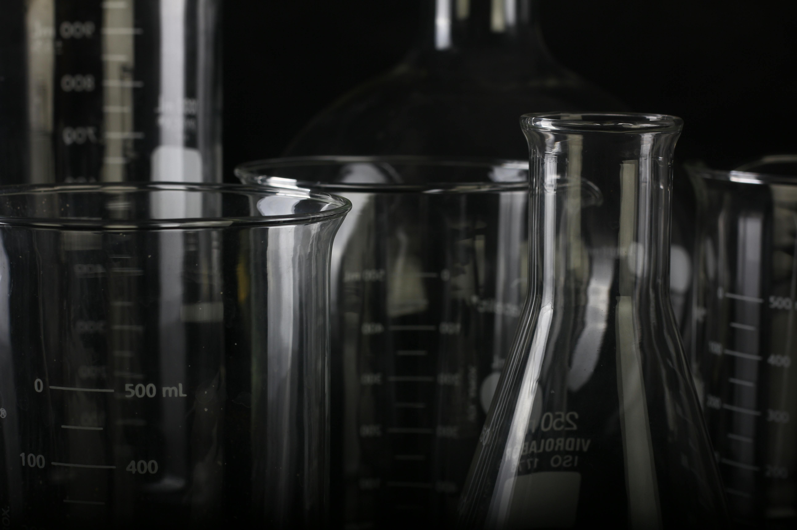
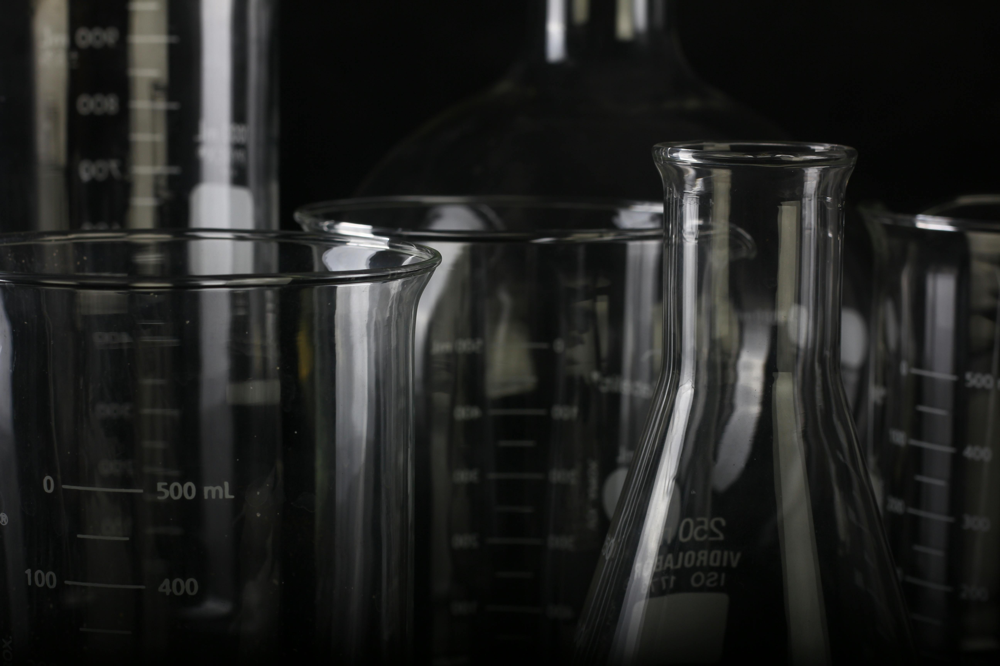

WELCOME
The AAA (Alter of Artificial Ascendancy) is a covert and highly classified government department hidden away from thr public eyes. Its primary focus is conducting forbidden and morally reprehensible experiments, often involving human subjects as the unwilling test subjects. The department's work spans a wide range of disturbing experiements, including advanced AI development, body manipulation, drug experimentation, and more, pushing the boundaries of science and ethics. Despite its sinister operations, the department maintains a façade of legitimacy, with few truly aware of the depths of its dark activities for their country to have it's perfect weapons. Those who serve within it are bound by a code of secrecy, with their roles tied to the fulfillment of its controversial and dangerous objectives. Meaning. They aren't able to tell a word of this. Not like anyone will believe them.
WARNING
There are topics involed with crul acitivies, thank you.